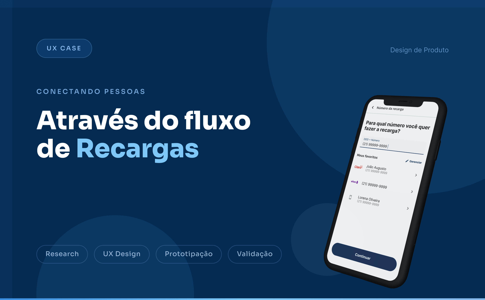
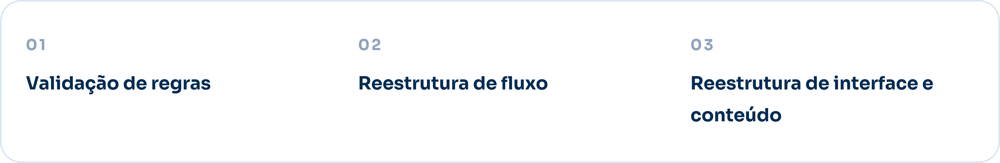
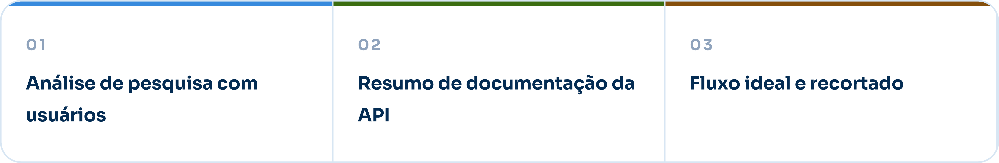
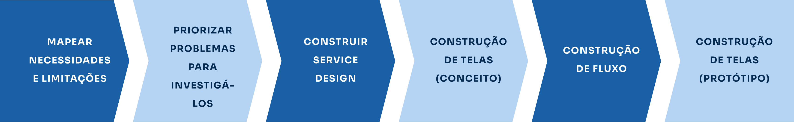
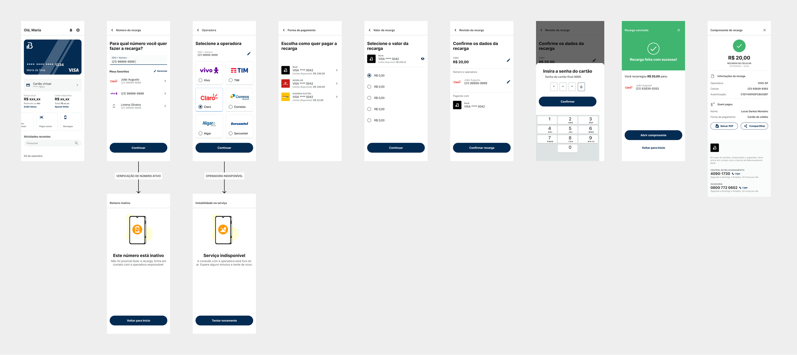
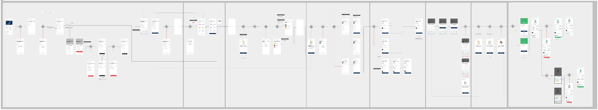
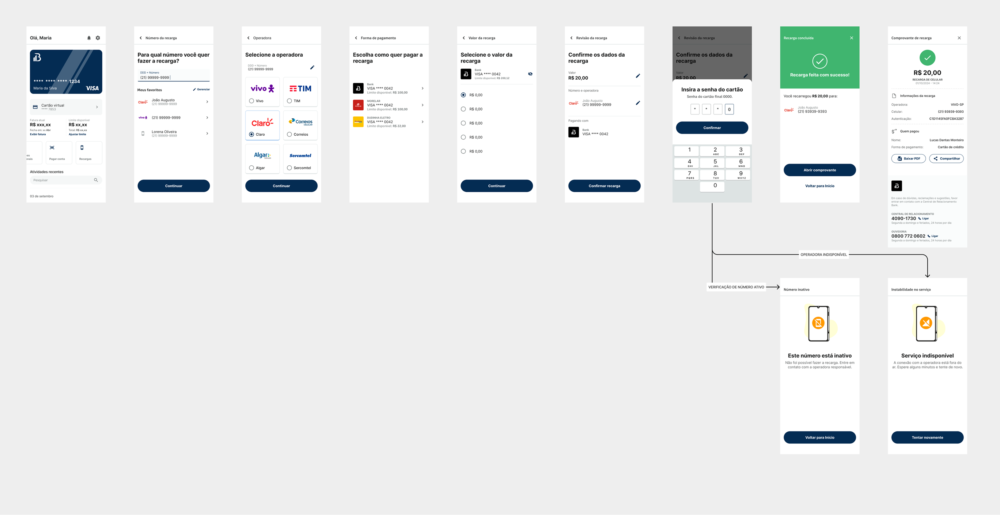
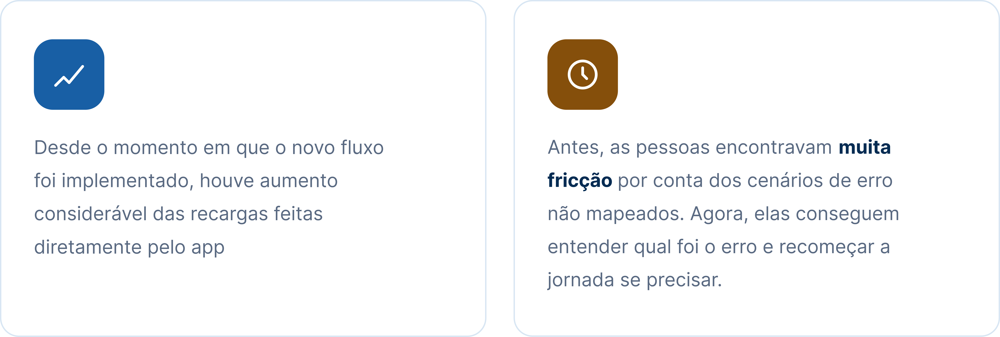

Através do fluxo de Recargas
Projeto de reconstrução do fluxo de recargas no app bancário, com foco em melhorar a clareza da jornada, reduzir atritos e tornar a experiência mais simples para o usuário.

Entendendo o projeto
No banco em que trabalhamos, o time precisou reconstruir o fluxo de recargas. Esse fluxo consiste em, dentro do app bancário, permitir que o usuário recarregue o crédito do seu dispositivo móvel.
O projeto teve como objetivo escalar o fluxo, preencher cenários importantes e melhorar a experiência do usuário durante a jornada.

Por que o projeto começou?
O projeto ganhou destaque para o banco porque, em uma pesquisa com clientes, os próprios usuários pediram a funcionalidade.
Apesar do fluxo já existir, percebemos que ele precisava ser reanalisado, já que fomos capazes de identificar melhorias, oportunidades e ainda conseguimos validar regras de negócio antes do time de Tecnologia voltar para o projeto..
Quais foram os principais pontos do projeto?
Durante o desenvolvimento, alguns pontos se mostraram essenciais para a construção de uma jornada mais clara e eficiente:

Qual foi o maior desafio?
O maior desafio foi tornar o processo de recarga mais claro para o usuário, reduzindo dúvidas durante a jornada e diminuindo possíveis pontos de abandono.
Também foi necessário equilibrar regras de negócio, limitações técnicas e uma experiência visual simples, direta e acessível.
Quais foram os entregáveis desse projeto?

E qual foi o processo para construir nosso fluxo?
O processo passou por etapas de pesquisa, mapeamento de regras, construção de fluxos, prototipação, validação e consolidação da jornada final.

Resultado das telas
A partir das descobertas e regras mapeadas, foram criadas telas para tornar o fluxo mais claro, objetivo e alinhado ao comportamento esperado do usuário.

Jornada ideal
A jornada ideal foi desenhada considerando o melhor cenário de uso, priorizando clareza, continuidade e redução de esforço durante o processo.

Adaptação das limitações e jornada final
Após considerar limitações técnicas e regras de negócio, a jornada foi adaptada para manter uma boa experiência sem perder viabilidade de implementação.


Quais foram as ferramentas usadas?
Quais foram os resultados?

O que aprendemos com esse projeto?
O projeto mostrou a importância de equilibrar a solução ideal com as limitações reais de produto, negócio e tecnologia.
Também reforçou como uma jornada bem estruturada pode reduzir dúvidas, melhorar a experiência e atender uma demanda real dos usuários.